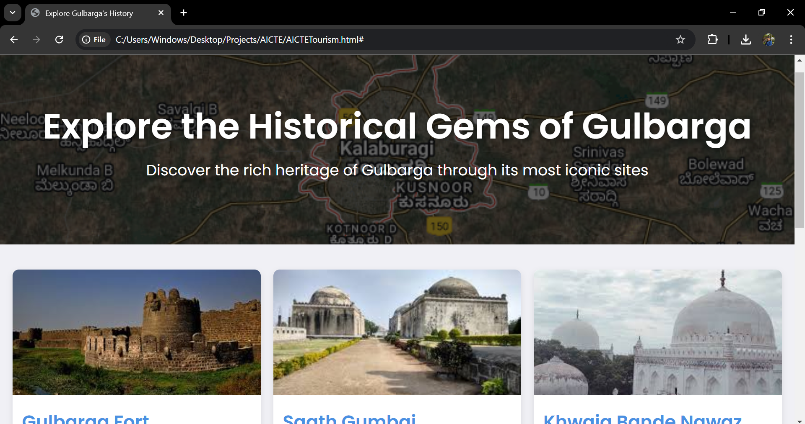

Projects
These are projects that i am currently working on passionately
StudentCentral
An application to assist students with advice on various aspects of education and student life.

DigiLab
A chemistry lab environment for students to learn contactless experiments.

Radius-Oriented Garbage Collector for Lakes
A motorized setup that collects trash floating in lakes with a rotating arm.

Weight-Sensitive Barrier
A system to protect animals from falling off cliffs in wildlife sanctuaries.

Radio Frequency Reducer
A device to protect birds in wildlife sanctuaries from mobile device frequencies.

Pratishta
A chatbot for college inquiries that provides library and campus information.

Hardware-Enabled Root of Trust
A security system for UIDAI to protect Aadhaar photographs.

QuantaOne
A medical rover that records vital information of admitted patients.

Explore Historical Places of Gulbarga
A website showcasing historical places in Gulbarga and their significance.
LegalDocX
A website that stores documents and allows third-party access based on permission.